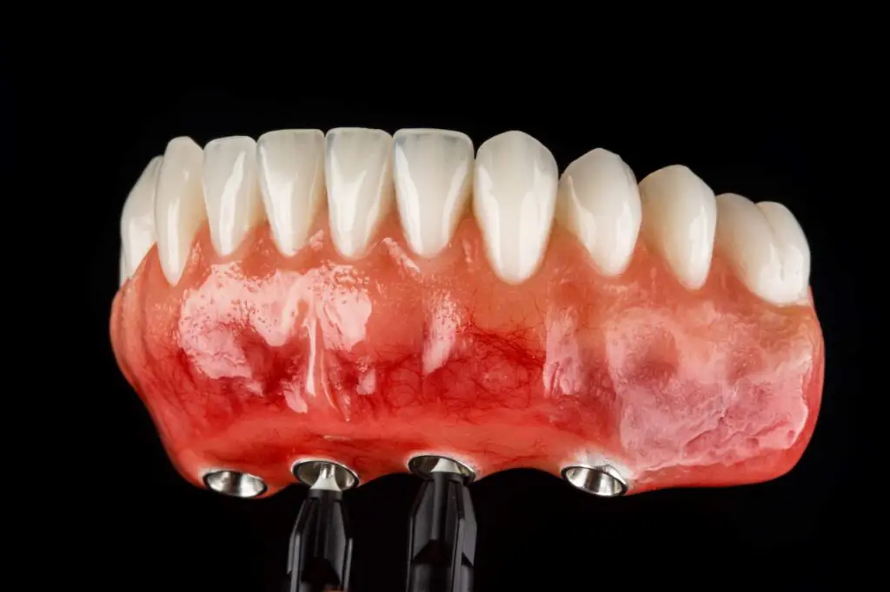

Rejeição de implante dentário: causas e como evitar

Muita gente tem receio da "rejeição" do implante dentário. Primeiro, um esclarecimento importante: o titânio é um material biocompatível, então o corpo não o rejeita como faria com um órgão transplantado. O que pode acontecer é a falha na osseointegração — quando o osso não se une bem ao implante. E isso é raro: as taxas de sucesso passam de 95%.
Por que uma falha pode acontecer
Quando ocorre, a falha geralmente está ligada a um ou mais fatores:
- Infecção (peri-implantite): inflamação por acúmulo de placa ao redor do implante.
- Tabagismo: reduz a circulação e prejudica a cicatrização.
- Osso insuficiente ou de baixa qualidade sem o preparo adequado.
- Doenças não controladas, como diabetes descompensada.
- Sobrecarga na mastigação, muitas vezes por bruxismo.
- Higiene inadequada após o procedimento.
Repare que quase todos os fatores são preveníveis — e é por isso que planejamento e cuidado fazem tanta diferença no resultado.
Sinais de alerta
Procure o dentista se notar:
- Dor persistente ou que aparece semanas depois de tudo já ter cicatrizado.
- Mobilidade do implante (sensação de que está "solto").
- Gengiva muito vermelha, inchada ou com pus ao redor.
- Retração da gengiva expondo parte do implante.
Detectar cedo aumenta muito a chance de resolver o problema sem perder o implante.
Como aumentar as chances de sucesso
- Escolha uma equipe especializada, com bom planejamento e exames de imagem.
- Pare de fumar antes e depois da cirurgia.
- Mantenha uma higiene bucal rigorosa.
- Controle doenças crônicas com o seu médico.
- Faça as consultas de manutenção periódicas.
- Use placa de proteção se tiver bruxismo.
E se o implante falhar?
Na maioria dos casos é possível remover o implante, tratar a região e, após a cicatrização, instalar um novo. Ou seja, mesmo uma falha costuma ter solução. O mais importante é agir cedo e com acompanhamento profissional.
Conclusão
A "rejeição" verdadeira é rara. Com bom planejamento, hábitos saudáveis e manutenção, o implante tem altíssima taxa de sucesso e se torna uma solução definitiva para o seu sorriso.
Quer fazer seu implante com planejamento e acompanhamento sério? Fale com a Oral Sin Juiz de Fora.